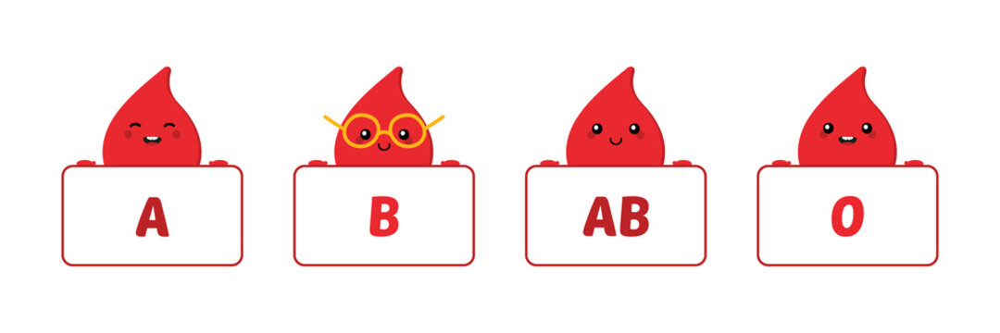

Welcome to the Blood Bank Management System
This system helps manage blood donations and deliveries effectively. It also provides the blood bank with an easier way to store and retrieve data and keep a record of the availability of blood in the blood bank.
A blood donation occurs when a person voluntarily has blood drawn and used for transfusions and/or made into biopharmaceutical medications by a process called fractionation (separation of whole blood components). Donation may be of whole blood, or of specific components directly (apheresis). Blood banks often participate in the collection process as well as the procedures that follow it.Today in the developed world, most blood donors are unpaid volunteers who donate blood for a community supply. In some countries, established supplies are limited and donors usually give blood when family or friends need a transfusion (directed donation). Many donors donate for several reasons, such as a form of charity, general awareness regarding the demand for blood, increased confidence in oneself, helping a personal friend or relative, and social pressure.
Blood
Blood is a specialized bodily fluid that delivers necessary substances to the body's cells.It has four main components: plasma, red blood cells, white blood cells, and platelets. Blood has many different functions, including: transporting oxygen and nutrients to the lungs and tissues.The blood donation process from the time you arrive until the time you leave takes about an hour. The donation itself is only about 8-10 minutes on average.
There are four main blood types: A, B, AB, and O. It's important to know your blood type for safe transfusions.
Blood is categorized into different types based on the presence or absence of antigens and antibodies. The main blood types are:
- A: Has A antigens on the red cells and anti-B antibodies in the plasma.
- B: Has B antigens on the red cells and anti-A antibodies in the plasma.
- AB: Has both A and B antigens on the red cells and no anti-A or anti-B antibodies in the plasma. Known as the universal recipient.
- O: Has no A or B antigens on the red cells but has both anti-A and anti-B antibodies in the plasma. Known as the universal donor.